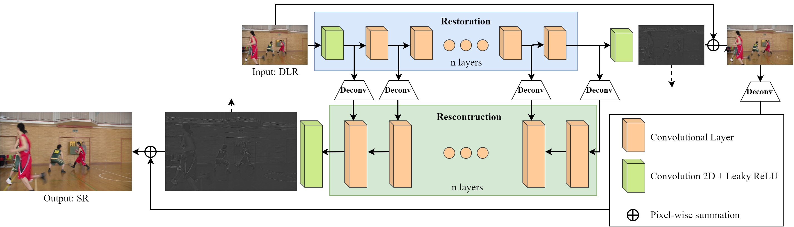

About me

|
Man M. Ho Research Student Graduate School of Computer Science and Engineering Hosei University, Tokyo, Japan ----------------------------------------------- My interests lie in Computer Vision, Deep Learning, and Photography. Besides, I love to take/edit/retouch photographs. Let's enjoy my Flickr. |
Research Interests
- Video Compression at low bit-rate scenario:+ Dealing with various degradation brought from video codec.
+ Improving compression ratio using Colorization, Super-resolution, Motion Compensation, etc.
- Deep Learning meets Photography.
+ Image Style/Color Transfer.
+ Colorization.
Publications
(I have published my works under the name "Minh-Man Ho" before 2020/1)

|
Deep Preset: Blending and Retouching Photos with Color Style Transfer Man M. Ho, Jinjia Zhou Arxiv, 2020. [Paper] [Webpage] [Github] |
|
Semantic-driven Colorization Man M. Ho, Lu Zhang, Alexander Raake, Jinjia Zhou Arxiv, 2020. [Paper] |
|

|
Japanese Coins and Banknotes Recognition for Visually Impaired People Huyen T. T. Bui, Man M. Ho, Xiao Peng, Jinjia Zhou VizWiz Workshop, 2020. [Paper] |

|
SR-CL-DMC: P-frame coding with Super-Resolution, Color Learning, and Deep Motion Compensation (Top-5 performance among teams which have submitted a factsheet on P-frame Track, CLIC2020) Man M. Ho, Jinjia Zhou, Gang He, Muchen Li, Lei Li IEEE Conference on Computer Vision and Pattern Recognition Workshops (CVPRW), 2020. [Paper] [Video] [Webpage] |
|  |
RR-DnCNN v2.0: Enhanced Restoration-Reconstruction Deep Neural Network for Down-Sampling Based Video Coding Man M. Ho, Jinjia Zhou, Gang He ArXiv, 2020. [Paper] [Webpage] [GitHub] |
|
Down-Sampling Based Video Coding with Degradation-Aware Restoration-Reconstruction Deep Neural Network (Oral - Best Paper Runner-up Award) Man M. Ho (Minh-Man Ho), Gang He, Zheng Wang, Jinjia Zhou International Conference on Multimedia Modeling (MMM), 2020. [Paper] [Webpage] [GitHub] [Demo] |
|

|
Respecting Low-level Components of Content with Skip Connections and Semantic Information in Image Style Transfer (Oral) Man M. Ho (Minh-Man Ho), Jinjia Zhou, Yibo Fan ACM SIGGRAPH European Conference on Visual Media Production (CVMP), 2019. [Paper] [Webpage] [GitHub] [Demo] [Comparison Video] |
Awards and Honors
2020/07, "Hosei University Science and Engineering Departments Education/Research Promotion Fund Academic Achievement Award 2020".2020/01, "Best Paper Runner-up Award" at MMM2020, Deajeon, Korea.
2018/08, "Key Contributor" by EyeQ Tech, Vietnam.
2018/08, "Squad of the month" by EyeQ Tech, Vietnam.
2016/12, “The Five-Virtue Student” by Vietnam National University, University of Information Technology.
Professional Experience
I have served as a reviewer for CVPRW 2020, BMVC 2020.Education
2018/09 - now: Master's student at Hosei University, Tokyo, Japan.2017/09: Received the B.S. Degree (Honor Program) in Computer Science at Vietnam National University, University of Information Technology, Vietnam.
Work Experience
2018/09 - now: Research Assistant at Intelligent Media Processing Lab, Hosei University, Tokyo, Japan.2017/09 - 2018/9: Machine Learning Engineer at EyeQ Tech, Vietnam.